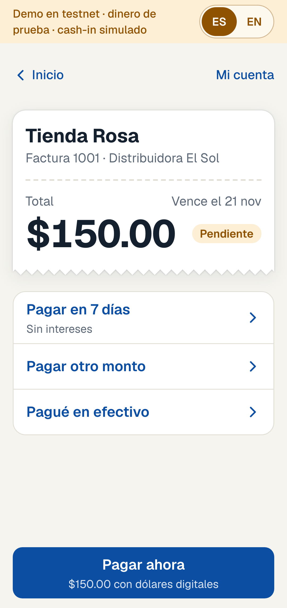
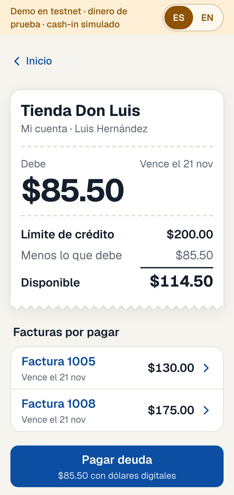

The problem
Rosa's truck is at the door and she is short on cash. A loan shark hands her the money today, at about $35 for every $100 (2019 survey).
In a four-country survey, 8 in 10 small businesses pay suppliers mainly in cash.
Rosa is an example, not a real interview.
$5.7 trillion: IFC and SME Finance Forum, "MSME Finance Gap", Mar 2025 (2019 data). Facts entry 22.
$2 billion: Conamype estimate, via Diario El Salvador, 27 Feb 2026. Shop count: Distribución Dinámica, via Diario El Mundo, 1 Mar 2026. Entries 1 and 3.
$35 per $100: CIOPS (UTEC) survey of 1,285 merchants, 2019, via Revista E&N. 6 in 10: FUSAI and ASOMI, via El Diario de Hoy, Jul 2026. Entries 9 and 10.
Cash: El Salvador, Guatemala, Honduras and Mexico, 2022 survey, via Diario El Mundo, 10 Apr 2025. Entry 11.
Relay
Del efectivo al crédito
Pay the truck now, in cash, or in [N] days. No interest.
Stock on credit at no interest, not about $35 per $100 (2019 survey).
Distributors pay a small fee. Shops never do.
How it works




Scan to try it
relay-sv.vercel.app
Live on Stellar testnet with test dollars. Cash-in is simulated.

The business
One $100 delivery, paid in [N] days
- The lender pool pays the distributor now: [payout]
- The shop repays in [N] days: $100, no interest
- The fee, up to [X]%: [buffer] buffer, [lenders] lenders, [our cut] us
- Every shop starts at a [$ limit] credit limit
The distributor pays because it is paid at the door and carries no risk of the shop not paying.
Our plan
- One distributor's routes first
- A bank or cash-in partner for the cash
- A licensed lender funds the pool
Where we go next
El Salvador, then Ecuador and Panama (they also use the US dollar), then Guatemala and Honduras, then Mexico and Peru.
Risk #1: cash to digital dollars
Not solved yet. Our demo simulates it. Plan: shops repay weekly like a bill at a bank or payment point, and a licensed partner converts in bulk and does KYC and KYB.